Подарочный сертификат
Можно приобрести подарочный сертификат! Оплатите его заранее, распечатайте и подарите близкому человеку, начальнику на работе, жене или мужу.
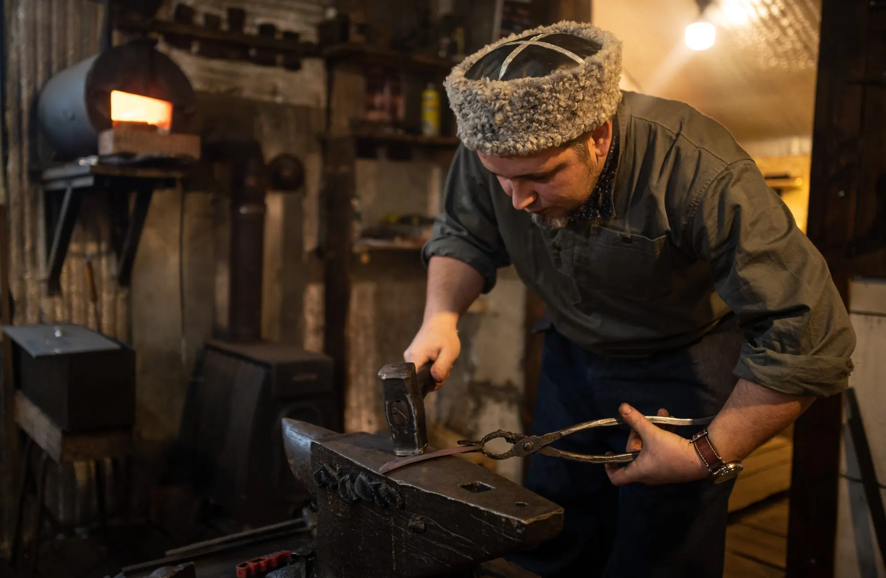
Посёлок Юго-Камский · Пермский край
Принесём в вашу жизнь тепло настоящего ремесла. Семейная мастерская, где муж куёт характер в стали, а жена печатает историю в прянике. Погрузитесь в мир, где создаются не просто вещи, а ваши живые воспоминания.
О нас
Ремесленники из посёлка Юго-Камский
Мы живём здесь уже 11 лет, и все эти годы наша жизнь связана с ремеслом. Сергей — кузнец с 25-летним стажем, и вот уже более десяти лет он проводит мастер-классы по ручной ковке. Через его кузницу прошли сотни гостей — из разных уголков России и даже из других стран. Каждый уезжает с готовым ножом и незабываемым опытом.
Юлия пять лет назад открыла столярную мастерскую, где создаёт авторские пряничные доски. А с 2025 года начала проводить мастер-классы по печатному прянику — теперь гости могут не только увидеть, как рождается узор, но и сами испечь пряник на нашей брендовой доске.
Мы — семья, которая делает своё дело с любовью и радостью и делится им с вами.
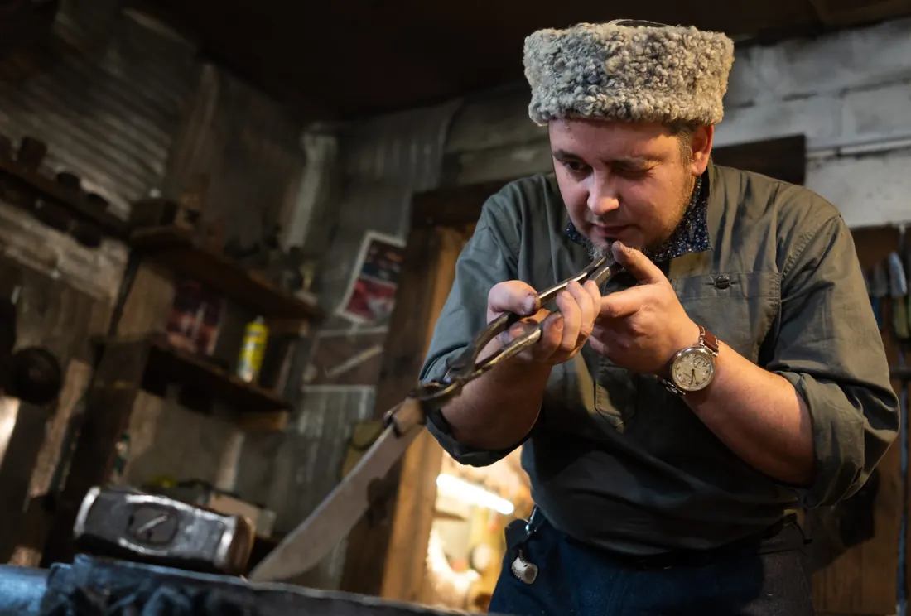
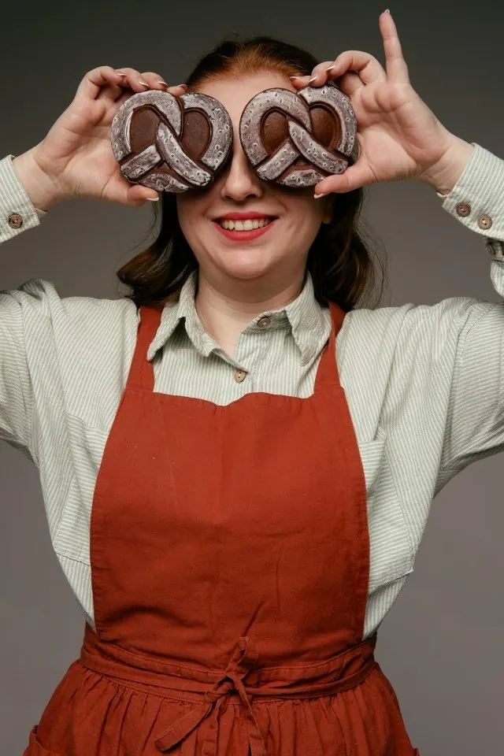
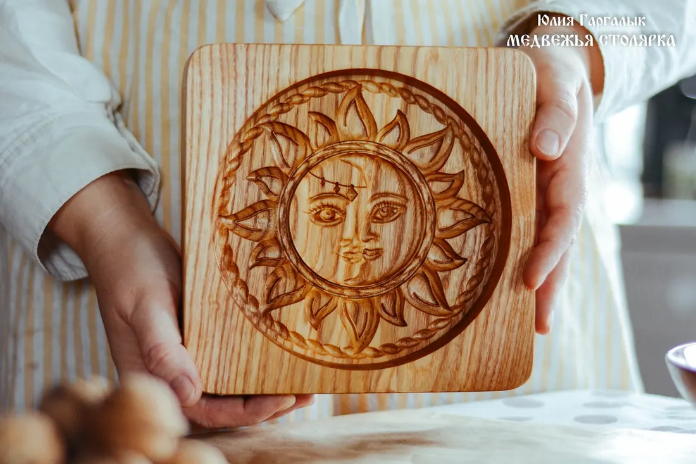
Мастер-класс · Кузница
Погрузитесь в атмосферу настоящей кузницы!
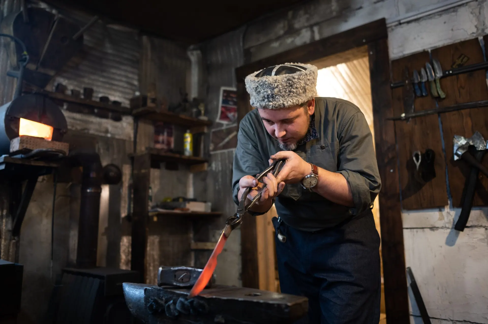
В мастер-класс входит ручная ковка, формирование, отшлифовка и заточка клинка, насадка и формирование рукояти. Вы пройдёте весь путь создания ножа — от раскалённого металла до готового изделия. По завершении вы уезжаете с рабочим готовым ножом, который сделаете сами под чутким руководством кузнеца. Это уникальный опыт, который остаётся с вами навсегда — и в памяти, и в металле.
Что можно выковать: нож для охоты, для кухни, для души, простой и функциональный рабочий инструмент. Сергей предоставит выбор стали и расскажет о преимуществах каждой, поможет подобрать дерево и латунную фурнитуру из наличия.
Итоговая цена зависит от материалов рукояти: 9 000 ₽ — начальная, до 11 000 ₽ — с более дорогими материалами.
Записаться на ковкуМожно приобрести подарочный сертификат! Оплатите его заранее, распечатайте и подарите близкому человеку, начальнику на работе, жене или мужу.
На каждый сделанный на мастер-классе нож, как и на другие наши изделия, действует пожизненная гарантия. Это изделия, которые передают из поколения в поколение.
Все ножи мастерской изготовлены с соблюдением норм законодательства по ГОСТ Р 51644-2000 «Ножи разделочные и шкуросъёмные» и холодным оружием не являются.
Мастер-классы · Пряники
Все наши мастер-классы проходят в уютном деревянном доме, где пахнет корицей, мёдом и свежей выпечкой. Вы не просто печёте — вы прикасаетесь к ремеслу, которое в Юго-Камском возрождается заново. А ещё каждый уносит домой свой пряник, новые знания и частичку юго-камской традиции.
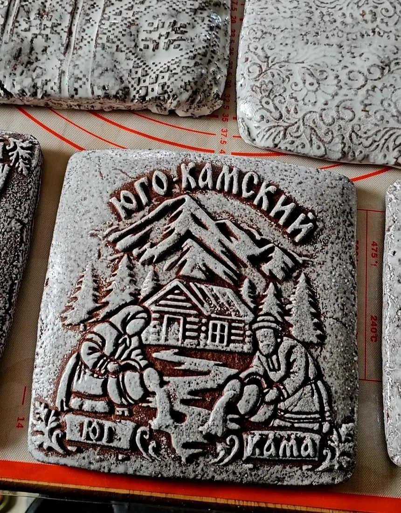
Для компаний
Тесто с нуля
Весь арсенал форм
Вы не просто наблюдаете — вы полностью управляете процессом: от замеса до украшения. Я рядом, но всё делаете вы.
Ключевое предложение
Один день — два мастер-класса. Настоящее семейное приключение в атмосфере ремесла и уюта. Пока папа куёт нож, мама с детьми стряпает пряники!
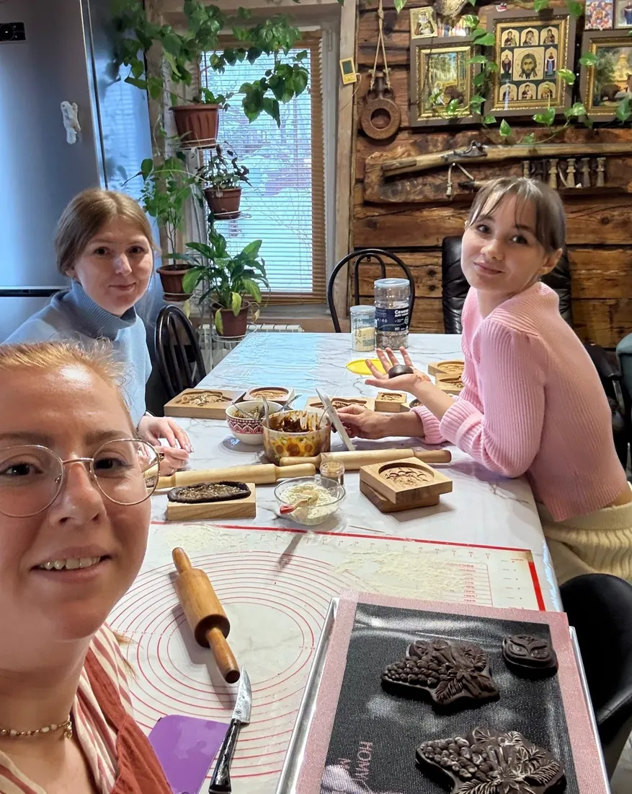
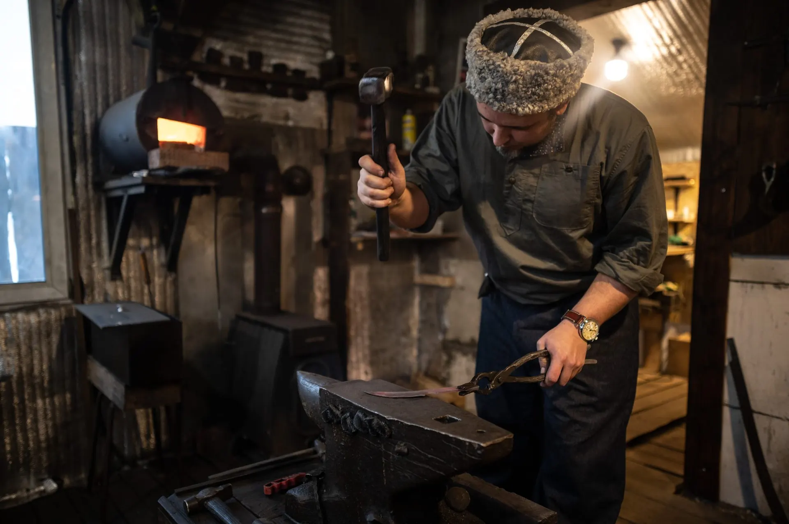
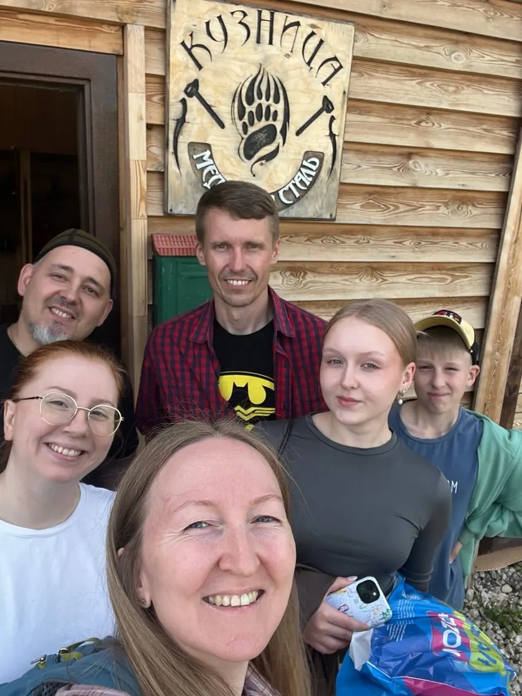
Стоимость семейного формата
14 000 ₽
Нож, который папа выкует своими руками, и полтора килограмма пряников от мамы и детей — в один день.
Забронировать день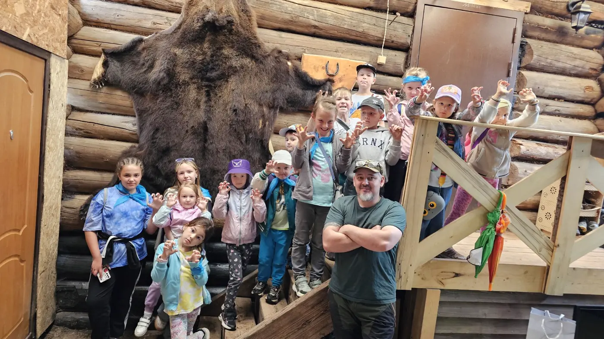
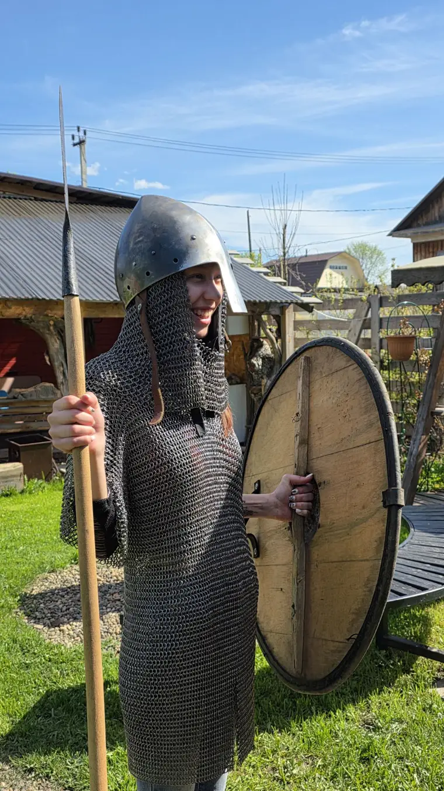
Для компаний и туристов
Мини-экскурсия для тех, кто хочет своими глазами увидеть настоящую кузницу. Сергей разожжёт горн, расскажет, как рождается клинок, и покажет личный музей мастерской — кольчуги, щиты и старинное оружие.
200 ₽ с человека
Договориться об экскурсииОтзывы
Больше 250 отзывов покупателей и гостей — в нашей группе ВКонтакте.
Подарочный сертификат
В конце июля прошлого года жена подарила мне на день рождения сертификат на мастер-класс к Сергею. Почти год не мог доехать, несколько раз переносили дату. И вот наконец-то добрался. Остался в восторге и от самого процесса ковки, и от конечного результата. Нож получился шикарный. Сергей — реально мастер своего дела и душевный человек.
Ковка ножа
Мы с супругом побывали на мастер-классе! Душевная атмосфера. Сергей — человек, который очень располагает к себе. И даже если ты держишь молот первый раз в своей жизни, то под его руководством нет дискомфорта. Время в кузнице пролетело незаметно. Получился нож — единственный в своём экземпляре, в котором и душа супруга, и мастера Сергея!
Всей семьёй
Недавно приезжали в гости в кузницу «Медвежья сталь» и получили просто невероятные эмоции. Сергей — мастер своего дела, отличный собеседник, а что самое главное, хороший человек. Приехали всей семьёй и с большим удовольствием наблюдали за тем, как наш папа ковал себе нож! Это был наш ему подарок.
Экскурсия с детьми
Однажды в дождливый день посетили кузницу. Дети не очень хотели ехать, но, попав в кузницу, нас заворожило. Сергей разжёг печи, рассказывал, показывал все тонкости в работе. Дети и взрослые были под впечатлением. Есть в кузнице ещё личный музей, очень интересный. Слушать и слушать, время пролетело незаметно.
Ковка ножа
Всю жизнь была неравнодушна к кузницам, и чудо произошло! Кузница «Медвежья сталь» распахнула для нас свои двери! И под чутким руководством Сергея мы создали свои личные ножи. Это было волшебно! В моих планах вернуться в кузницу к Сергею ещё не раз!
Ковка ножа
Скажу честно, когда узнал, что придётся ковать самому, — напрягся: «А у меня вообще получится?» Забегая вперёд, скажу: под чутким руководством Сергея получится всё. … Всё настолько душевно, что чувствуешь себя как дома. … Пожалуй, впервые за долгое время просто отключился от повседневной рутины — реальная перезагрузка мозга.
Мастер-класс
Очень понравилось, мастер очень хороший мужик, всё ясно и подробно объяснял, всё получилось в лучшем виде.
Ремонт ножа
Мастер — супер! Надо было исправить деформацию лезвия стального ножа. Можно было бы его и выкинуть, но нож служил нескольким поколениям нашей семьи. В течение получаса мастер всё починил, отшлифовал, отполировал и заточил. И… не взял платы. … Рекомендую как высококлассного специалиста!
Запись и контакты
Запись на мастер-классы — по телефону или в сообщениях. Мы есть в мессенджере MAX по этим же номерам.
Кузница · ковка ножа · экскурсии
Пряничные мастер-классы
Адрес
Пермский край
{kind=link}
{kind=link}
{kind=link}
{kind=link}
{kind=link}
{kind=link}
{kind=link}
{kind=link}
{kind=link}
{kind=link}
{kind=link}
{kind=link}